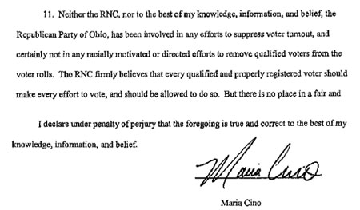
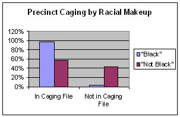
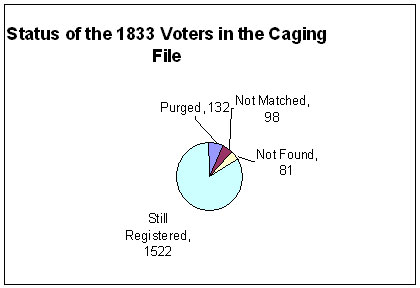
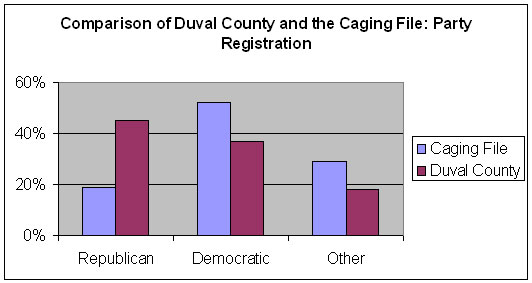

This is a copy of a page by Mark Johnston 26 June 2007 at E.Pluribus Media.
Voter suppression in America may have affected our last three Congressional and last two Presidential elections. The efforts uncovered so far have been aimed at suppressing minority votes or those who traditionally vote for Democratic political candidates. Have there been more? We don't know. But we can and must look at the data now available to see if further investigation is warranted.
"Caging" is a method of voter suppression in which first-class mail is sent to registered voters to confirm their addresses. If the letter is returned to the sender, the name and address on the returned mail is entered into a database known as "caging list." A document, "
A document, "State Implementation Template III.doc,"
last saved by Christopher Guith, attorney and Bush-Cheney2004 campaign official, provides a template of plans for challenging voters at the polls based on caging.
II. Precinct Identification Method
Every precinct/ward in the state that had 60% or more votes for Gore in 2000 AND every precinct/ward that had 60% or more votes for Bush should be identified as target precincts.
Pre-Election Day Operations – New Registration Mailing
At whatever point registration in the state closes, a first-class mailing should be sent to all new registrants as well as purged/inactive voters. This mailing should welcome the recipient to the voter rolls. It is important that a return address is clearly identifiable. Any mail returned as undeliverable for any reason, should be used to generate a list of problematic registrations. Poll watchers should have this list and be prepared to challenge anyone from this list attempting to vote.
Public emails at GeorgeWBush.org
In total, there are 129 emails with 57 attachments. Of these attachments, 38 are spreadsheets. Two of the files, "Caging.xls" and "Caging-1.xls", contain 1834 names, with all 1771 names in "Caging.xls" contained in "Caging-1.xls". One attachment, "Lakeland FTM JAX Melbourne POTUS rallies1.xls", contains 178 names from all over Florida and is apparently a list that pertains to a rally featuring President George W. Bush. It cannot be reasonably considered a "caging list". more ... In addition to the 129 publicly available emails, there are 489 emails not released to the public. In the private files, there are 232 attachments, including 35 spreadsheets. more ...
|
This attachment was included in an email (found in a cache of emails accidentally addressed to the parody website "GeorgeWBush.org" and provided to ePluribus Media by John A. Wooden, owner of that domain name) sent by Mike Sheridan, Political Director of the Washington State Republican Party. It was copied to the Executive Director of the Washington State Bush-Cheney campaign, Jon Seaton. Given Guith's position in the Bush 2004 campaign and his collaboration with Griffin and other RNC staff in emails discovered in the Ohio caging case, this document offers strong evidence that the Bush-Cheney campaign, and possibly the RNC, were designing, directing and advocating the plan of using caging lists for the purpose of voter suppression. ePluribus Media contacted Mr. Guith for comment, but has received no response.
In the 1980's, lists such as these were used by Republicans to mount challenges, influencing elections. The lists of the 1980's were used to disproportionately disenfranchise minority voters, leading to lawsuits against the Republican National Committee (RNC). In 1982, a consent decree signed by the RNC prohibited caging efforts directed at voter suppression of minority populations, and was the basis of at least one successful challenge to Republican use of caging for voter suppression in Ohio in 2004. Christopher Guith was also an author and recipient of the emails discovered in the Ohio caging case. In this case, filed in the New Jersey District Court overseeing the Consent Decree, the RNC submitted a filing denying they were involved in caging efforts.
Their arguments suggested that caging lists were designed and implemented by the Ohio Republican Party and insisted that the 1982 consent decree applies only to the national political parties. In a declaration to the US District Court, District of New Jersey, Civil Action No. 81-3876 which pertained to 2004 Ohio Caging lists, Deputy RNC Chairman Maria Cino swore under oath that the RNC has not "been involved in any efforts to suppress voter turnout ..."

The District Court ruling in this case established that caging lists can be biased against minorities and that use of caging lists to make election-day challenges against voters is a violation of the 1982 consent decree. Although the 3rd Circuit Court of Appeals issued a stay order for a rehearing, the stay was issued late afternoon on election day, and it is unclear whether there were any challenges in Ohio based upon caging lists.
In addition to caging efforts in 2004 in Ohio, for an October 26, 2004 BBC Newsnight program, journalist Greg Palast reported that 1886 voters in Jacksonville, Florida had been found on "caging lists." According to Palast, "Two e-mails, prepared for the executive director of the Bush campaign in Florida and the campaign's national research director in Washington DC, contain a 15-page so-called 'caging list'. It lists 1,886 names and addresses of voters in predominantly Black and traditionally Democrat [sic] areas of Jacksonville, Florida." This prompted concerns that the RNC was once again employing caging to target minority voters for vote challenges. The claims of caging in Jacksonville in 2004 have been repeated by Palast in books and interviews since 2004 and are often cited as evidence of voter suppression. In order to better understand the issues surrounding caging in Duval County, Florida, in the 2004 elections, we evaluated the available evidence and prepared this report.
According to his book Armed Madhouse, in October, 2004, Palast received emails containing caging lists from John A. Wooden, the owner of the parody websites WhiteHouse.org and GeorgeWBush.org. We contacted Wooden to see if he could help us understand the contents of the files at his website. According to Wooden, these emails were among those collected by his parody website when people sent emails to any address ending with "@georgewbush.org." The catch-all email address was closed October 29, 2004, ending the collection.
We reviewed all of the emails obtained by Wooden. In total, there are 620 emails with 289 attachments (copies of 129 of these emails are available from Wooden's website). Of these attachments, 108 are spreadsheets. Two of these files, "Caging.xls" and "Caging-1.xls," contain 1834 names, with all 1771 names in "Caging.xls" contained in "Caging-1.xls" (as one entry is a duplicate, there are 1833 unique names and addresses). There is one attachment, "Douglas County Voter Fraud Master Spreadsheet.xls" that is a list of 21 names from Douglas County, Nevada, that also appears to be a caging list based on file structure. None of the other attachments in the GeorgeWBush.org emails can reasonably be considered "caging lists."
The emails containing "Caging.xls" and "Caging-1.xls" were sent from Kelly Porter [kporter@rpof.org] of the Republican Party of Florida to the RNC on August 25 and 26, 2004, respectively. Recipients of both emails included:
An RNC political officer - Lindy Landreaux [LLandreaux@rnchq.org]- RNC Research/Communications personnel
Miriam Moore [MMoore@rnchq.org]
Victoria Newton [VNewton@rnchq.org],
Tim Griffin [griffin@rnchq.org]
Shawn Reinschmiedt [SReinschmiedt@rnchq.org] The RNC Director of Research Operations
Randy Kammerdiner [rkammerdiner@rnchq.org] A member of the Republican Party of Florida
Stephen Shiver [sshiver@rpof.org] The Director of the Bush-Cheney campaign in Florida
Brett Doster [bdoster@georgewbush.org]
Tim Griffin, Research Director and Deputy Communications Director, RNC, responded to the first email "thank you, perfect," and the second "Thx." Thus, the emails and attached caging lists document the interest of the RNC in the Republican Party of Florida's caging efforts. The analysis that follows is based on the comprehensive caging list, "Caging-1.xls."
The main concern with the use of "caging lists" is that they can be used specifically to suppress minority votes. Indeed, Palast reported in his 2004 BBC Newsnight piece that the caging list includes "1,886 names and addresses of voters in predominantly Black and traditionally Democrat [sic] areas of Jacksonville, Florida." According to Mindy Tucker Fletcher, a Republican spokesperson responding to Palast's assertions, it "was a listing of returned mail that came from a mailing that the Republican National Committee sent to new registrants in Duval County in Florida, encouraging newly registered Republicans, Democrats and Independents to vote Republican." This mailing approach matches that outlined in the Guith template. We thus sought to reconcile the description of the caging list by Palast and the statement by Fletcher that the mailings were not used to target any specific population.
We decided that we should first see if the addresses were restricted to certain geographic areas. Of the 1833 unique addresses, 1743 contained enough information to allow assignment to precincts (95% of list) using a web-based tool provided by the Duval County Supervisor of Elections website. Another tool was then used to acquire information about party registration and race statistics for each precinct. In total, 237 of Duval County's 285 (83%) precincts contained caged addresses. Of the sixty precincts containing greater than 50% Black population ("majority Black"), 97% (58) contained caged addresses. Of the 225 precincts that were not majority Black, only 56% (127) had at least one address caged. Thus the geographic pattern of addresses to which caging letters were apparently sent was seemingly widespread, consistent with the Republican Party description of sending letters to all newly registered voters. But the recipient addresses seem disproportionately focused on majority Black precincts.
We also wondered whether the caging method itself was biased. In other words, was it more effective at caging Democratic or minority voters? To answer this question, we obtained the entire voter registration file (Compiled June 8, 2007) from Duval County. Of the 1833 unique addresses on the "caging list" from August 2004, 1522 names and/or addresses (83%) could be identified as unique voters who remained registered; these were entered into a spreadsheet for analysis. We also obtained lists of voters purged from the registration rolls between June 1, 2004 and June 22, 2007. There are 132 names and addresses subsequently identified from the purge lists*, yielding a total of 1654 identified names and addresses (90% of the original list). Ninety-eight names from the caging list could not be matched to a single voter (5%) and 81 names (5%) could not be found on the list**. The 1654 identified voters were analyzed for party registration and race, based on the voter registration data, which is self-reported by the registrant and made public by the Duval County Elections Board.
Because the Republican Party was the source of the list, we first asked whether the list was biased against Democrats. In Duval County, 44.8% of voters are registered Democrats, whereas 36.8% are registered Republicans. With respect to the caging list, of the 1654 voters we identified, 52% were registered Democrats, whereas 19% were registered Republicans. Thus, caging, as employed by the Republican Party in Florida in 2004, is biased to identify Democratic voters.
We next asked whether caging was biased to identify minority voters. The entire population of Duval County registered voters is 26.9% Black, 2.9% Hispanic and 64.2% White. Examining the caging list reveals very different ratios: 48% Black, 5% Hispanic and 35% White. Thus, the caging list contains a disproportionately high number of Black and Hispanic voters. As such, the Jacksonville caging list emailed to the RNC appears to be racially biased. If the RNC was involved in its generation and if the lists were used to make challenges, this would almost certainly be a violation of the 1982 Consent Decree.
To summarize, based upon the geographic pattern of acquired addresses, caging letters were likely mailed diffusely throughout Duval County and not selectively mailed to addresses in "Black" or "Democratic" precincts. This is consistent with the Florida Republican Party statement that letters were sent to addresses of all newly registered voters. However, the caging efforts clearly acquired addresses of Democratic, Black and Hispanic voters more efficiently than white voters.
*Duval County purges registrations if official mailings are returned to the Elections Board and the voter is inactive 2 years, but none of the caging list purges were removed for this criterion. Of the 132 identified names removed from the registration roll, 66 transferred their registration, 9 died, 24 were removed for Civil Rights Felony convictions, and 33 were removed for other reasons such as moving out of the county.
**This could reflect misspellings or other errors in the caging list data precluding our ability to find the name, last name changes such as by due to marriage, or removal from the list by the Duval County Elections supervisor prior to June 1, 2004.
{kind=link}
{kind=link}
{kind=link}